From raw evidence
to security insight.
I'm Theodore Simpson, a Security+ certified cybersecurity professional with an active U.S. Secret clearance. This portfolio documents hands-on academic investigations, technical evidence, and the reasoning behind each finding.
Selected cybersecurity work
Six featured case studies showing investigation, detection, vulnerability analysis, security monitoring, network segmentation, and access controls. Three additional technical labs are available below.
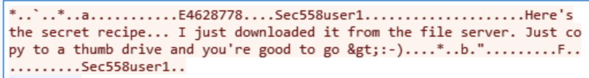
Tracing a Suspicious File Transfer
Reconstructed a simulated insider-data-transfer scenario from packet-capture evidence.
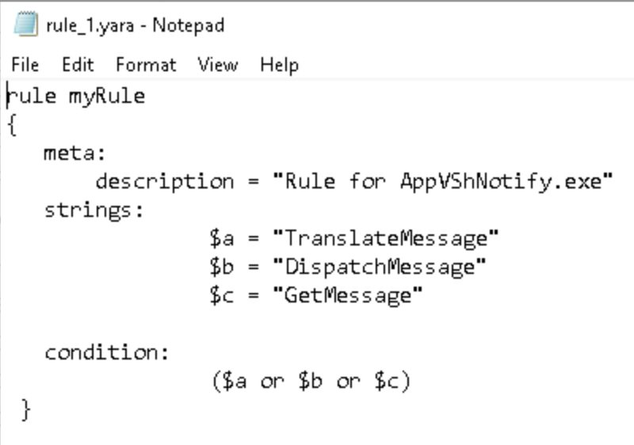
Writing and Testing YARA Rules
Built signature-style rules from strings in Windows executables and tested them against sample binaries.
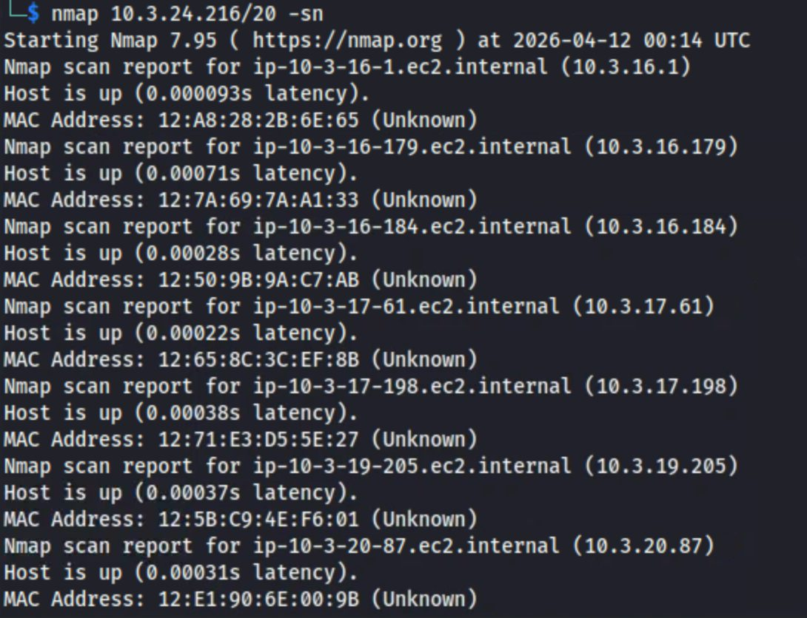
Network Discovery and Web Assessment
Practiced host discovery and web-service assessment inside an authorized virtual lab.
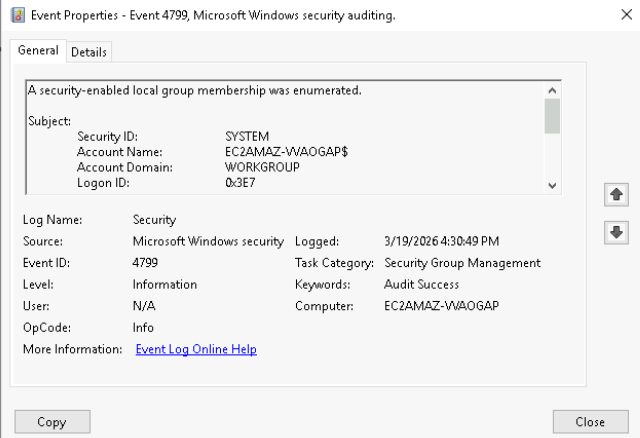
Windows Event Log Triage
Reviewed Windows event records and explained their implications for security monitoring.
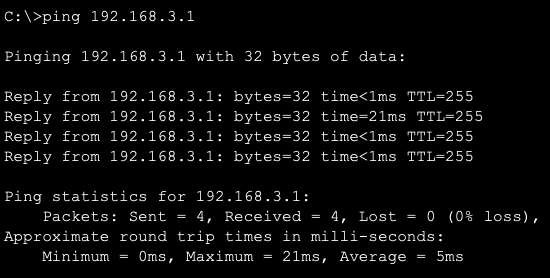
VLAN Segmentation & Router-on-a-Stick
Configured VLAN assignments, 802.1Q trunks, and router subinterfaces to support traffic between separated networks.
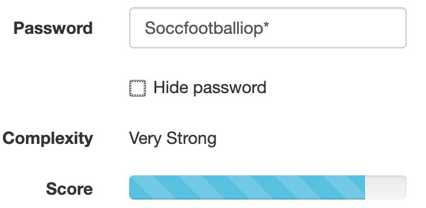
Password Strength and Access Controls
Compared password strength indicators and practiced authorized recovery of passwords from provided training files.
Additional projects
Supporting evidence from phishing analysis and Cisco routing coursework. These are intentionally secondary to the security-focused work above.
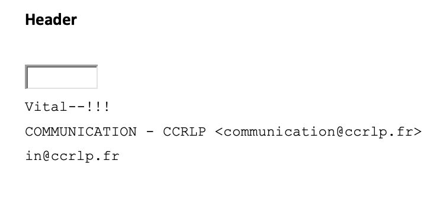
Investigating Suspicious Email Headers
Traced sender-related fields and mail authentication results in supplied suspicious-email evidence.
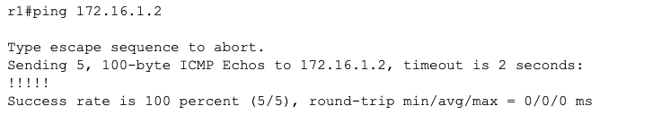
IPv4/IPv6 Static & Floating Route Design
Built a dual-stack routing exercise featuring static, default, and floating routes for alternate-path behavior.
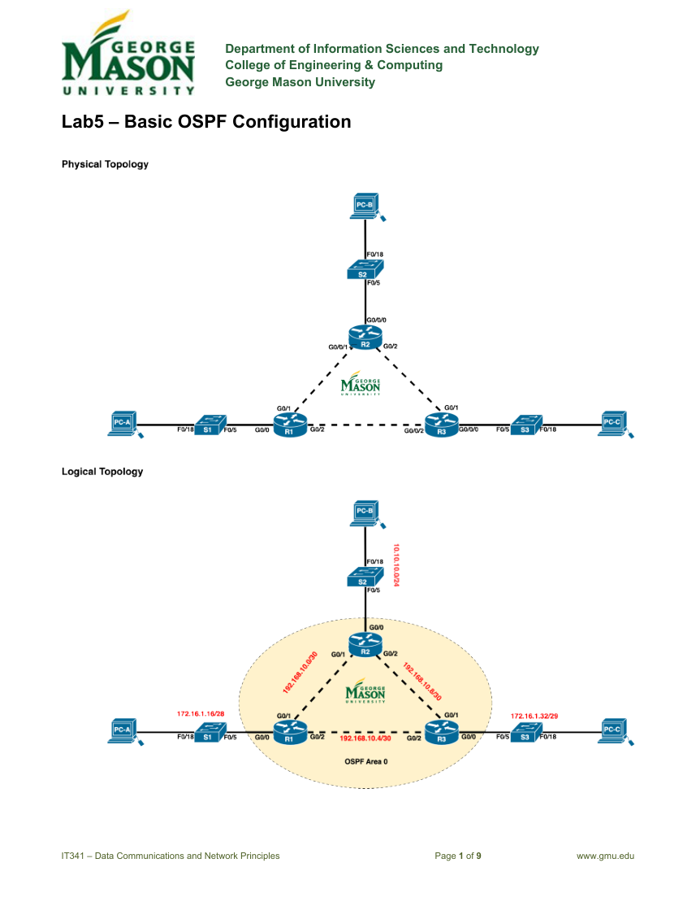
OSPF Multi-Router Network Configuration
Worked through OSPF Area 0 routing, router IDs, passive interfaces and route verification in a three-router topology.
Tracing a Suspicious File Transfer
Reconstructed a simulated insider-data-transfer scenario from packet-capture evidence.
Academic lab · controlled environment · original submitted evidence
Approach
Reviewed the supplied PCAP using graphical and command-line network analysis tools; correlated message content, transferred-file details and file signature.
Evidence & outcome
Identified the IM contact Sec558user1, the transferred file recipe.docx, the ZIP/DOCX signature 50 4B 03 04, and the recorded MD5 8350582774e1d4dbe1d61d64c89e0ea1.
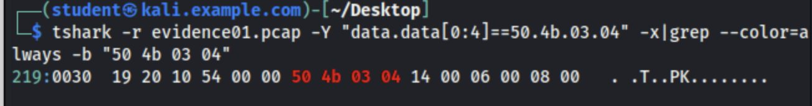
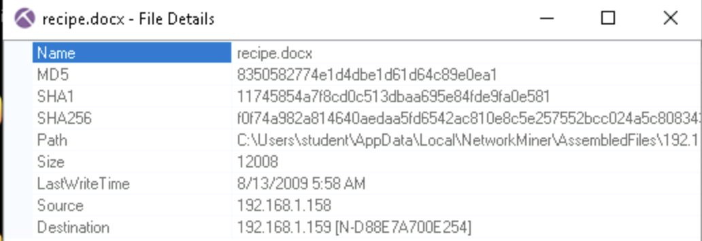
Writing and Testing YARA Rules
Built signature-style rules from strings in Windows executables and tested them against sample binaries.
Academic lab · controlled environment · original submitted evidence
Approach
Inspected executable strings in PeStudio, constructed rule conditions, and executed command-line scans to observe matching strings and offsets. Matches indicate a string signature, not proof of malware.
Evidence & outcome
The submitted lab records a successful match for TranslateMessage, DispatchMessage and GetMessage in AppVShNotify.exe. A separate rule test against firefox.exe is also documented.
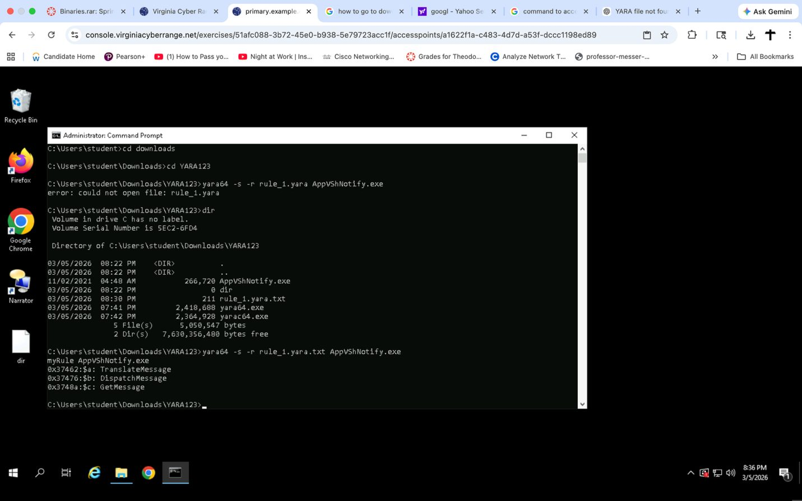
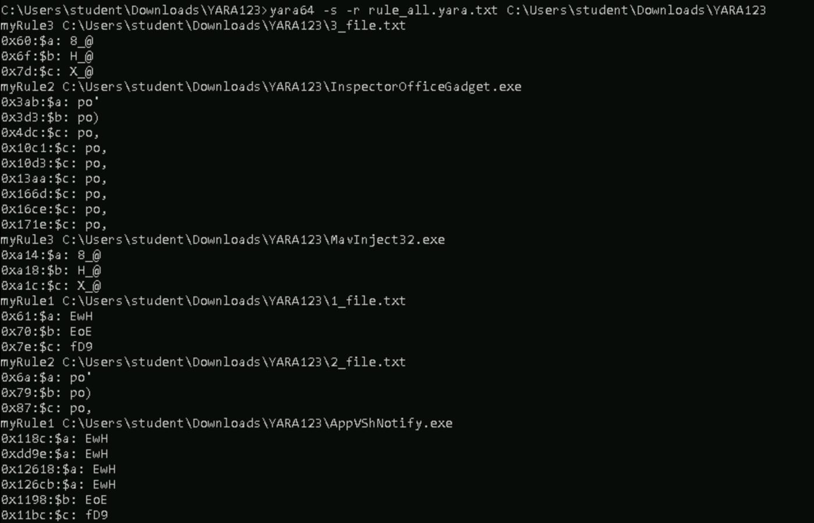
Network Discovery and Web Assessment
Practiced host discovery and web-service assessment inside an authorized virtual lab.
Academic lab · controlled environment · original submitted evidence
Approach
Inspected local interfaces, used Nmap for discovery and invoked Nikto against lab targets; reviewed scanner output and distinguished inconclusive scans from validated findings.
Evidence & outcome
Documented network discovery and attempted Nikto scans against lab hosts. Several captured Nikto runs report “0 host(s) tested”; these are not presented as confirmed vulnerability findings.
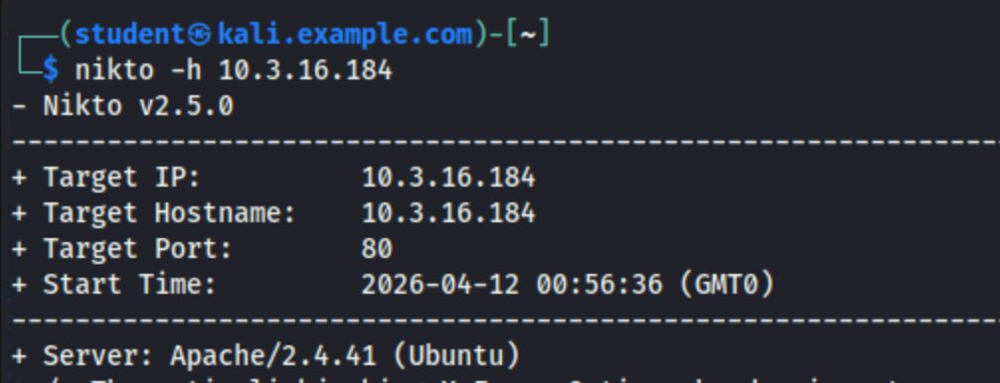
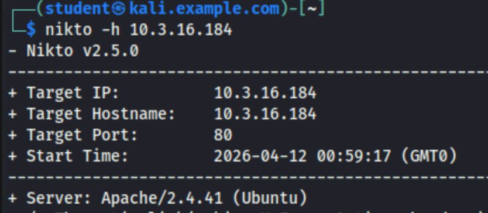
Windows Event Log Triage
Reviewed Windows event records and explained their implications for security monitoring.
Academic lab · controlled environment · original submitted evidence
Approach
Examined Event Viewer screenshots, interpreted event types and described how analysts might correlate account, privilege and service activity.
Evidence & outcome
Documented Event IDs 4799 (group membership enumeration), 4672 (special privileges assigned), 4624 (successful logon), and 7036 (service state change). Individual events are not automatically evidence of compromise.
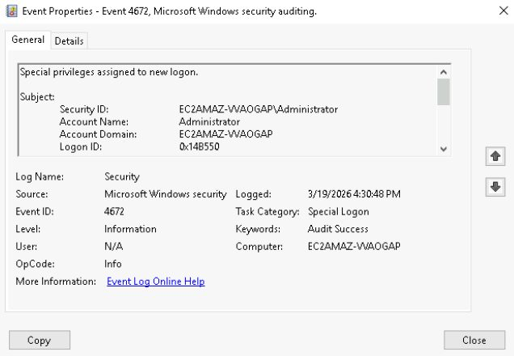
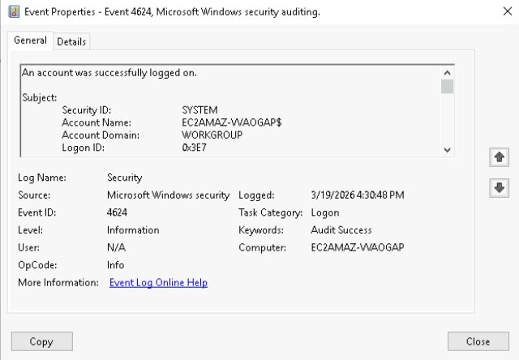
VLAN Segmentation & Router-on-a-Stick
Configured VLAN assignments, 802.1Q trunks, and router subinterfaces to support traffic between separated networks.
Academic lab · controlled environment · original submitted evidence
Technical approach
Defined VLANs 3, 4, 7 and 8; assigned switch ports, configured trunks, and documented router subinterfaces for VLANs 3 and 4.
Evidence & scope
The lab includes inter-VLAN ping and traceroute verification steps; this project documents the configuration and available screenshot evidence, without claiming measured security improvement.
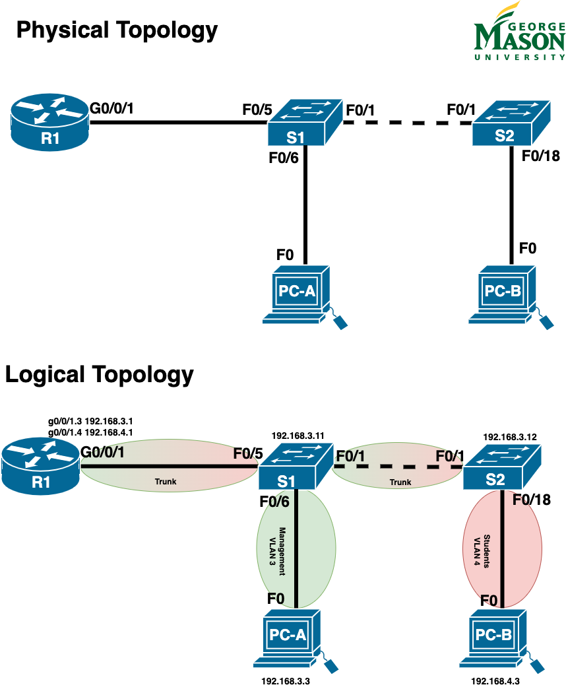
Password Strength and Access Controls
Compared password strength indicators and practiced authorized recovery of passwords from provided training files.
Academic lab · controlled environment · original submitted evidence
Approach
Compared password-strength estimates and used John the Ripper in a controlled training environment to test password-protected sample files.
Evidence & outcome
The lab records successful recovery of several weak sample passwords from training archives/documents, illustrating why common passwords are vulnerable.
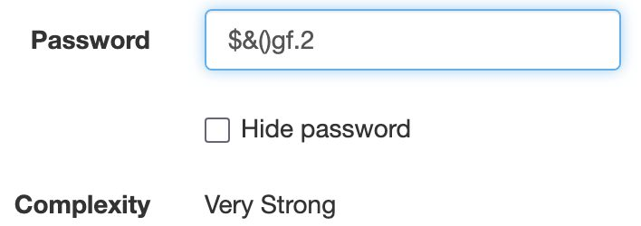
Investigating Suspicious Email Headers
Traced sender-related fields and mail authentication results in supplied suspicious-email evidence.
Academic lab · controlled environment · original submitted evidence
Approach
Examined Received hops, Return-Path, Message-ID, sender IP and authentication results; separated suspicious indicators from definitive proof of spoofing.
Evidence & outcome
Recorded sender IP 109.69.192.223 and a sender-reputation indicator of 3.5. The sample header reports SPF fail at one receiving hop while DKIM and DMARC pass; authentication signals require contextual interpretation.
IPv4/IPv6 Static & Floating Route Design
Built a dual-stack routing exercise featuring static, default, and floating routes for alternate-path behavior.
Academic lab · controlled environment · original submitted evidence
Technical approach
Configured the two-router topology, IPv4 and IPv6 address plans, static/default routes, and floating backup routes with administrative distance 80; lab verification used routing tables and traceroute.
Evidence & scope
Evidence comes from the submitted Packet Tracer coursework. Floating routes demonstrate a routing concept, not a production high-availability guarantee.
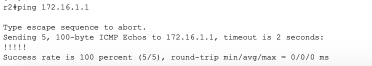
OSPF Multi-Router Network Configuration
Worked through OSPF Area 0 routing, router IDs, passive interfaces and route verification in a three-router topology.
Academic lab · controlled environment · original submitted evidence
Technical approach
The exercise covers OSPF network statements, router IDs, adjacency, routing tables, end-to-end reachability and passive interfaces.
Evidence & scope
The annotated lab submission and topology are included as evidence. Results are described as academic configuration exercises, not enterprise network engineering experience.
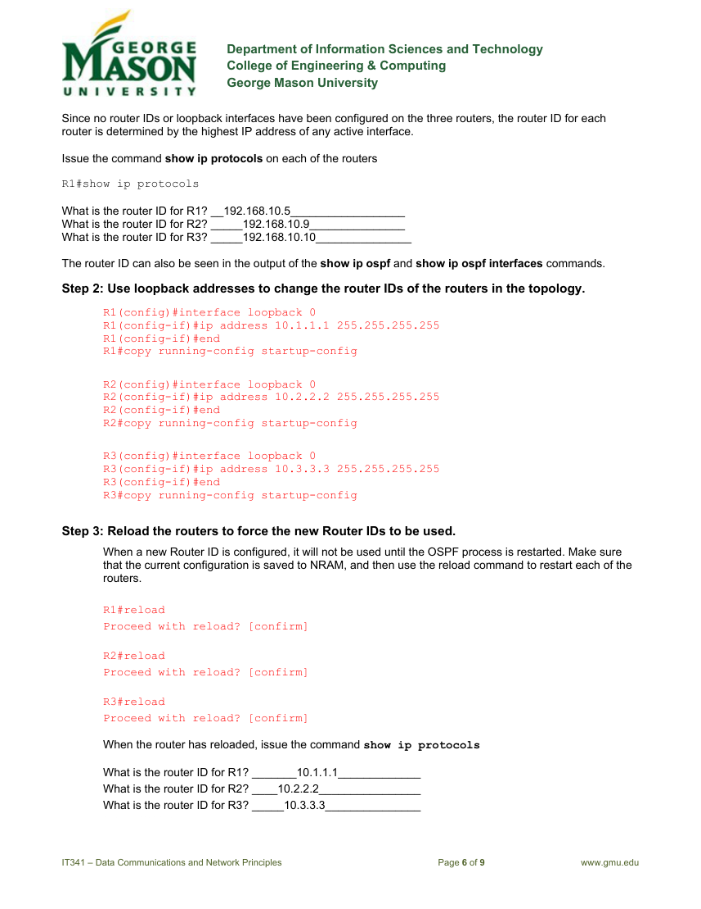
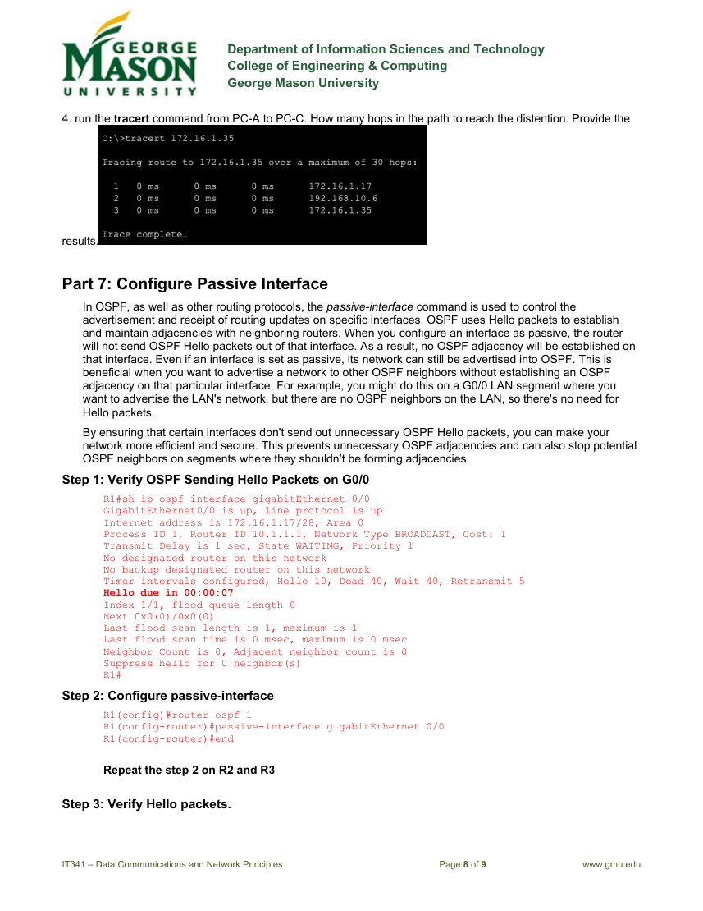
Technical curiosity. Evidence-driven thinking.
George Mason University B.S. in Information Technology, Cybersecurity concentration (2026). CompTIA Security+ certified; active U.S. Secret clearance. Background includes IP surveillance deployment, VLAN/network configuration, IT troubleshooting and security-focused academic investigation. Interested in SOC analysis, vulnerability management, digital forensics and security operations.